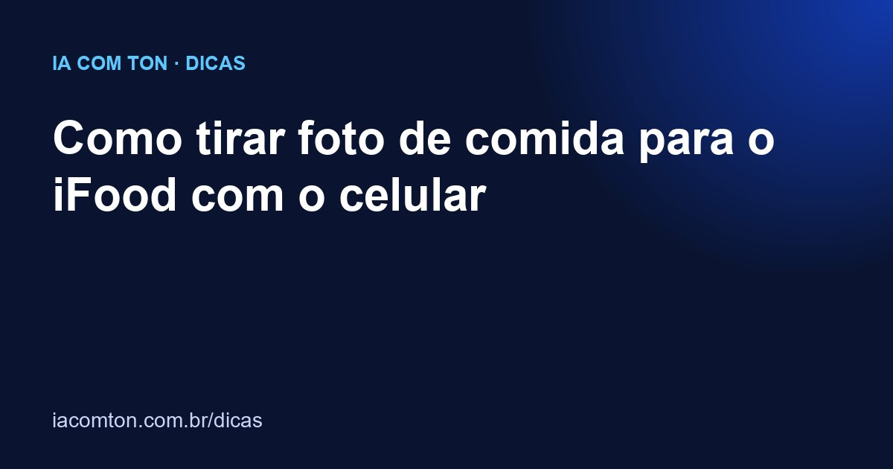

Como tirar foto de comida para o iFood com o celular
Por Ton, do IA com Ton · Publicado em 17/11/2026

Resposta curta: use luz natural de janela, limpe a lente, deixe o prato inteiro no quadro com um fundo simples e fotografe o prato como ele é entregue. Depois, corrija só luz e cor. A foto precisa mostrar o que o cliente vai receber.
De que luz eu preciso?
Luz de janela, de lado, durante o dia. Desligue o flash e as lâmpadas amarelas da cozinha, que deixam a comida com cor estranha. Se a sombra ficar forte, ponha uma folha branca do lado oposto à janela para clarear.
Qual é o melhor ângulo?
Depende do prato:
- De cima: pizzas, pratos feitos, combos e tudo o que é plano.
- Na diagonal (cerca de 45 graus): pratos com volume, como massas e sobremesas.
- De frente: hambúrgueres, sanduíches e bebidas, para mostrar as camadas.
Como arrumar o prato e o fundo?
- Use a mesma louça ou embalagem que o cliente recebe.
- Tire da mesa o que não faz parte do pedido: guardanapo solto, pano, celular.
- Prefira fundo liso: mesa de madeira, bancada clara ou uma cartolina.
- Mantenha a porção real. Foto com mais comida do que o pedido gera reclamação.
Posso editar a foto?
Pode, desde que a edição não mude o prato. Corrigir luz, cor e enquadramento é o suficiente na maioria dos casos. Não acrescente ingredientes, vapor ou brilho que não existem.
Se quiser fazer isso com o ChatGPT, a aula grátis do IA com Ton mostra o passo a passo com 3 atalhos prontos: Fotos de cardápio com o ChatGPT.
O que conferir antes de publicar?
- Os ingredientes e as quantidades são os mesmos do prato real?
- O prato aparece inteiro, sem corte?
- As cores parecem naturais?
- A foto continua legível em tamanho pequeno, como aparece na lista do aplicativo?
- As regras de imagem do iFood estão atendidas? Elas mudam: confira as atuais no Portal do Parceiro.
Perguntas frequentes
Preciso de câmera profissional?
Não. Um celular com a lente limpa e boa luz resolve a maior parte dos casos.
Posso usar foto de banco de imagens?
Não é recomendável: o cliente espera receber o que viu.
O IA com Ton tem parceria com o iFood?
Não. O conteúdo é independente.
Onde encontro mais atalhos prontos?
O guia Atalhos GPT para Edição de Fotos de Cardápio traz 18 atalhos e a configuração pronta para o ChatGPT, por R$ 29,90.